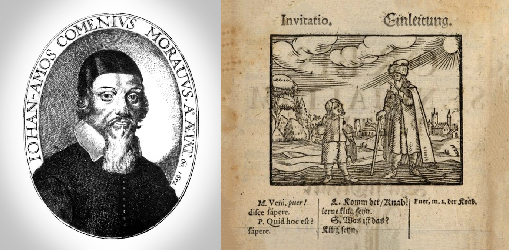
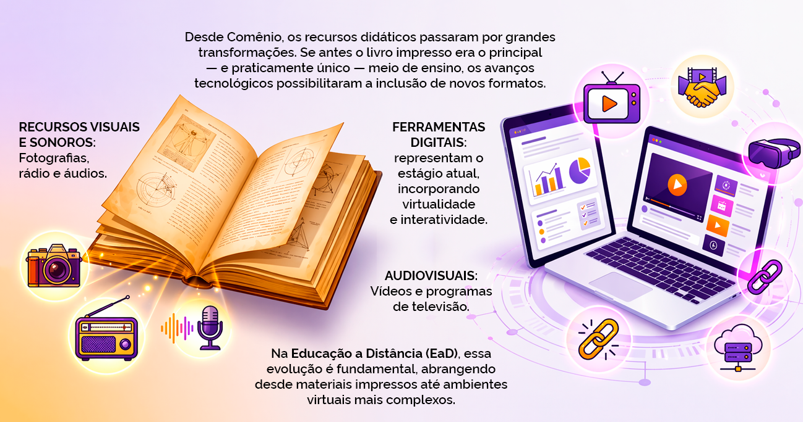
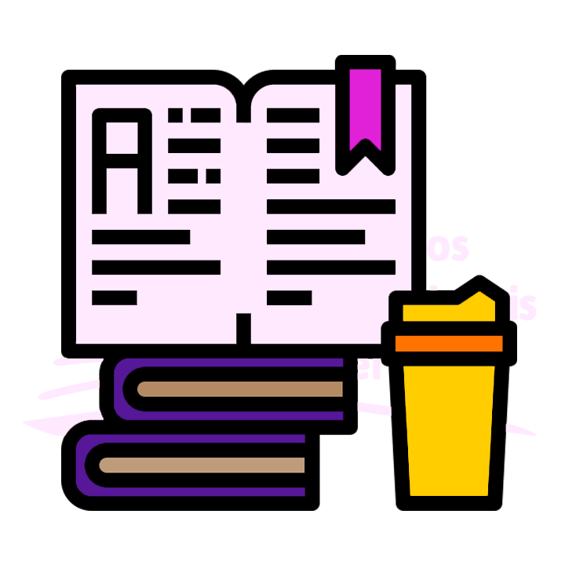
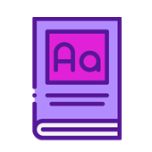

Conhecimento pedagógico
Conhecimento pedagógico: compreensão dos princípios de ensino e aprendizagem, adaptando o conteúdo para diferentes estilos e ritmos de aprendizagem.
Ao final desta aula você poderá:
Entender as especificidades do conceito de material didático para EaD.
Reconhecer as funções do material didático para EaD.
Reconhecer as competências do conteudista para elaboração de material didático de qualidade.
Andrea Dias da Silva
Núcleo Pedagógico e de Tecnologias
Educacionais
do Instituto René Rachou - FIOCRUZ MINAS
Antes de iniciar a discussão propriamente dita sobre a produção de materiais didáticos digitais, vamos refletir um pouco sobre alguns aspectos relacionados aos materiais didáticos para além da EaD.
O uso de materiais didáticos remonta a tempos muito distantes, e é tão antigo quanto o próprio processo de ensino. Considera-se que o primeiro manual elaborado com a intencionalidade de facilitar didaticamente o processo de aprendizagem foi o Orbis Sensualium Pictus, (Figura 1), um livro com vocabulário ilustrado para ensinar latim e outras línguas (Figura 2), organizado por Comênio em 1658.

Porém, somente quando — em face da necessidade de formar indivíduos com habilidades fundamentais exigidas pelo novo modelo de sociedade, por ocasião do processo desencadeado pela Revolução Industrial no século XIX — a educação se massificou, os sistemas de ensino passaram a fazer uso generalizado de manuais, livros-textos e outros materiais organizados especificamente para facilitar a aprendizagem.
Desde então, os meios didáticos passaram por significativa evolução, especialmente no que se refere a materiais impressos. Inicialmente, o livro constituía praticamente o único recurso pedagógico disponível. Com o avanço das tecnologias, contudo, os sistemas educacionais incorporaram novos suportes, como recursos visuais, sonoros, audiovisuais e, mais recentemente, ferramentas digitais.
Nesse contexto de evolução, a EaD, como uma modalidade de educação baseada no largo uso de tecnologias, incorpora esses avanços e passa a utilizar uma diversidade muito grande de materiais didáticos, que vão do impresso ao digital e virtual.

De modo geral, consideramos material didático qualquer recurso que possa modificar a maneira de ver e entender determinado conteúdo e que auxilie e impulsione o processo de ensino-aprendizagem. Assim, os materiais didáticos podem ser entendidos:
No entanto, o material didático digital possui singularidades a serem consideradas em sua produção, como o uso de diferentes mídias visando um adequado desenvolvimento pedagógico.
É sobre a produção desses materiais didáticos que falaremos a partir de agora. Vamos lá?
Em EaD, o material didático é um instrumento de mediação pedagógica e pressupõe uma preocupação sistemática com sua elaboração e produção. Nesse sentido, para que a base do processo de mediação seja efetivada no ensino-aprendizagem a distância, torna-se necessário um cuidado especial na elaboração dos materiais didáticos que funcionam como instrumentos que subsidiam o desenvolvimento de um curso ou programa na EaD, pois estes desempenham papel de extrema importância na condução da aprendizagem do estudante.

No processo de produção de materiais didáticos, o centro das preocupações deve ser a adoção de uma abordagem pedagógica que privilegie a capacidade de reflexão do estudante, integrando teoria e prática relacionadas ao seu contexto imediato, de modo que proporcione uma mediação pedagógica voltada para a produção do conhecimento do estudante (Corrêa, 2007).
Leva em consideração a necessidade que o estudante tem de ter uma visão global do conteúdo a ser trabalhado, seja através de objetivos específicos para cada conteúdo, seja através de um esquema introdutório de cada unidade (Gutierrez; Prieto, 1994).
Diz respeito ao tipo específico de aprendizagem que cada curso sugere, de forma a trabalhar o material voltado para o objetivo específico de cada conteúdo.
Diz respeito ao leiaute do material, que deve ser voltado para o estímulo à autoaprendizagem.
O material didático em EaD constitui um elemento mediador que deve trazer em seu bojo a concepção pedagógica que norteia o ensino-aprendizagem. Consciente ou inconscientemente, o planejamento e a elaboração do material didático estão intimamente relacionados com a proposta pedagógica da instituição e com a concepção de educação do produtor desse material.
O material didático precisa ser o condutor de um conjunto de atividades que procure levar à construção do conhecimento. Em EaD, precisa, ainda, ser capaz de provocar e garantir a necessária interatividade do processo de ensino-aprendizagem e garantir autonomia ao aluno em seus estudos. Daí a necessidade de elaborar o material didático com linguagem dialógica, que, na ausência física do professor, reproduza, mesmo em alguns casos, uma conversa entre professor e aluno, tornando a leitura leve e motivadora (Belisário, 2003).
A experiência em cursos presenciais não é suficiente para assegurar a qualidade de materiais educacionais que serão veiculados por diferentes meios de comunicação e informação. Cada recurso utilizado — material impresso, vídeos, programas televisivos, radiofônicos, videoconferências, páginas da web e outros — tem sua própria lógica de concepção, de produção, de linguagem, de uso do tempo, sendo, portanto, uma das grandes preocupações das instituições que os oferecem: o material didático a ser produzido para os cursos.
| Características |
 Material Impresso |
Material Digital |
|---|---|---|
| Navegação | Linear: Segue uma sequência lógica (início, meio e fim). |
Não linear: Navegação por hiperlinks; o usuário escolhe o próprio caminho. |
| Dinamismo | Estático: Uma vez impresso, o conteúdo é imutável. |
Interativo: Contém vídeos, animações e elementos clicáveis. |
| Flexibilidade | Pouca
personalização: É o mesmo conteúdo para todos os leitores. |
Pode ser
adaptativo: O conteúdo pode mudar com base nas preferências ou nível do usuário. |
| Troca de Informação | Comunicação
unidirecional: O autor fala e o leitor apenas consome. |
Comunicação
dialógica: Permite feedback em tempo real, comentários e colaboração. |
O material didático para EaD tem funções indispensáveis que devem ser conhecidas pelo conteudista antes de começar a elaborar o referido conteúdo:
Essas funções devem ser observadas para que os conteúdos não se apresentem distantes da realidade do estudante, sem sentido, e por consequência não ocorra aprendizagem significativa.
A qualidade de um curso a distância depende da qualidade do material didático, que, por sua vez, depende da formação adequada de quem o produz, mediante a aquisição de algumas competências fundamentais.
Como forma de garantir o alcance dos objetivos traçados, relacionamos algumas competências do conteudista para a produção do material didático para EaD que incluem habilidades e conhecimentos essenciais. Aqui estão algumas das principais:
Essas competências garantem que o conteudista esteja apto a criar materiais didáticos que sejam não apenas informativos, mas também envolventes e eficazes para o processo de aprendizagem.
Nesta aula você aprendeu que o material didático é um instrumento pedagógico que auxilia o aluno no processo de ensino e aprendizagem e que, na EaD, é o canal mais importante de comunicação com o estudante.
Aprendeu também que a construção do material didático digital tem especificidades, como o uso de diferentes mídias, visando um adequado desenvolvimento pedagógico. Que na construção do material didático digital deve-se atentar ao atendimento de funções como desenvolvimento de habilidades, competências e atitudes dos estudantes.
Por fim, que aquele que se propõe a ser um conteudista deve buscar adquirir as competências necessárias para criar materiais didáticos que sejam não apenas informativos, mas também envolventes e eficazes para o processo de aprendizagem.
Objetivo: Entender as especificidades do conceito de material didático digital.
Qual das alternativas a seguir melhor descreve a função do material didático digital na Educação a Distância (EaD)?
Objetivo: Reconhecer as competências do conteudista para elaboração de material didático de qualidade.
Entre as competências a seguir, qual representa uma habilidade fundamental do conteudista para garantir que o material didático seja adequado ao ensino-aprendizagem na EaD?